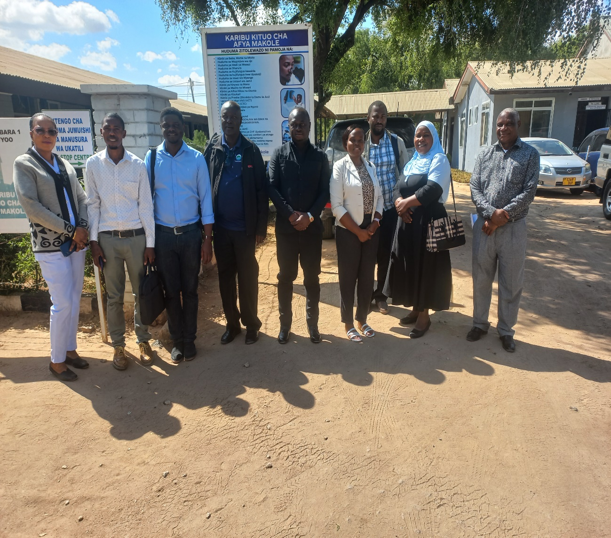
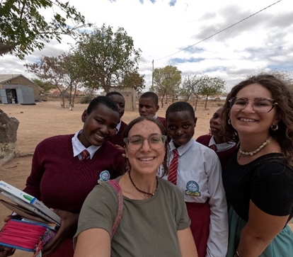
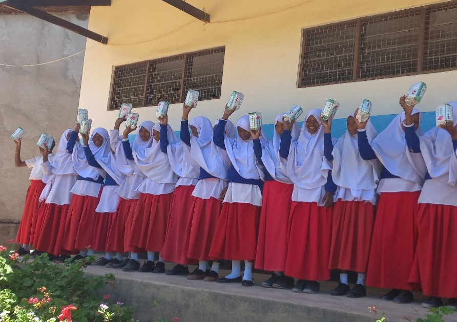
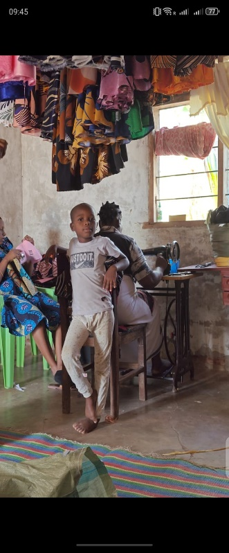

Community Mobilisation for Reciprocal Development
The Community Mobilisation for Reciprocal Development in Tanzania (CMSR-TZ) is a Non-Governmental Organization established in August 1997. We are registered under Certificate No. 00NGO/R1/00411 and based in Dodoma City, Tanzania.
Our purpose is to complement and support the Government of Tanzania in implementing community development projects targeting rural populations to alleviate extreme poverty.
We work in partnership with local and international NGOs, Faith-Based Organizations, the Government of Tanzania, and local communities across four key sectors: Education, Health, Women Empowerment, and Agriculture.
Our Vision
"Actively contribute to the social and economic development of the community in which we operate and continue facilitating people in the struggle for poverty alleviation through sustainable social services and economic development."
Our Programs & Sectors
CMSR-TZ implements community-based development projects across four key sectors, funded by development partners and the private sector.

Shule Program
Supporting 245+ students in Dodoma Region since 2001 with school fees, materials, and mentorship from Italian donors.

Health Programs
Promoting Menstrual Health Management (PMHM) and Maternal & Neonatal Health Care (IMaNHC) in Dodoma and Zanzibar.

SWALA Program
Economically empowering women in Chikopelo Bwawani through tailoring and production of handcrafted kitenge products since 2016.
Agriculture & Livelihoods
Sekondari ya Kilimo and Rulenge projects providing agricultural training, water infrastructure and entrepreneurship in Kagera Region.
Where We Work
CMSR-TZ operates across Tanzania Mainland and Zanzibar, with a special focus on rural communities.
Dodoma Region
Our headquarters. We implement the Shule Program (8 schools), PMHM health project (14 schools), IMaNHC maternal health, and SWALA women empowerment at Chikopelo Bwawani, Bahi District.
Kagera Region
In Ngara District, CMSR-TZ leads the Rulenge project – a comprehensive initiative covering agriculture training, entrepreneurship, deep water well, solar energy, and classroom construction.
Zanzibar
CMSR-TZ served as lead organization for the IMaNHC multi-country project, implemented in Zanzibar by partner CUAMM to improve maternal and neonatal health care.
Our Development Partners
We work closely with local and international partners, government authorities, and community stakeholders.
Lead Donor
Health Partner
Development Partner
Partner
Partner
Partner
Latest News & Updates
December 31, 2025
Our 2025 annual report covers successful implementation of the Shule Program, SWALA, PMHM, IMaNHC, and our Kagera agriculture and empowerment projects.
August 2025
CMSR-TZ staff and Italian volunteers visited 7 secondary schools in Dodoma Region, distributing school materials to 245+ sponsored students.
December 2025
Major milestone achieved as the deep water well, pump house, and solar-powered water distribution system were completed in Ngara District, Kagera Region.
Get Involved with CMSR-TZ
Partner with us, volunteer, or learn more about how CMSR-TZ is transforming lives across Tanzania through community development.